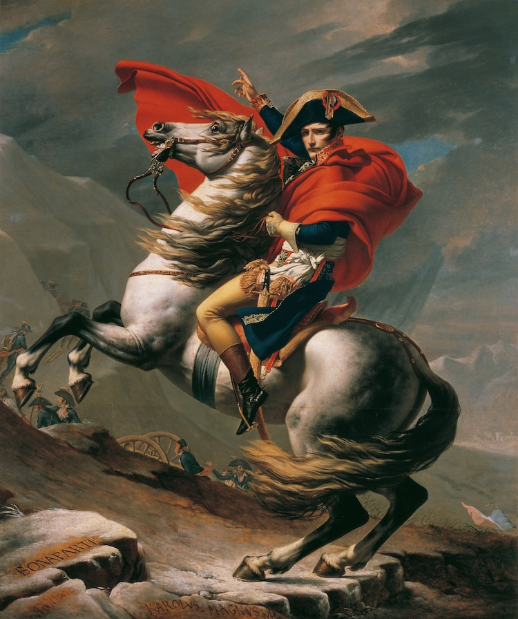
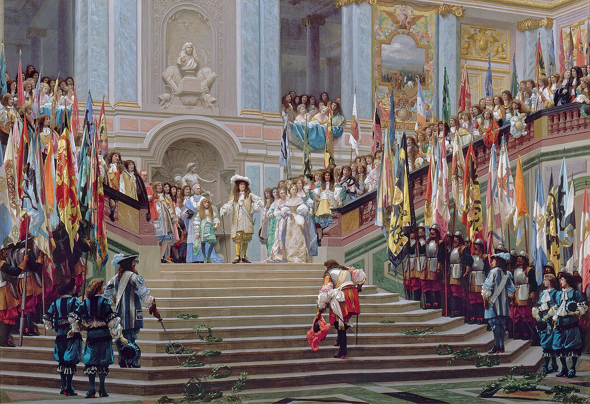

Curated Exhibitions
Select a movement to view iconic masterpieces and detailed historical analysis:

1. Neoclassicism
Inspired by classical antiquity, emphasizing monumental historical scenes, symmetry, order, and heroic posture.

2. Romanticism
Dramatic compositions focused on intense emotion, natural awe, heroic tragedy, and sublime imagination.

3. Impressionism
Capturing transient light, vibrant natural landscapes, outdoor atmosphere, and visible brushstrokes.

4. Post-Impressionism
Bold subjective color choices, vivid geometric structure, and deep psychological mood expression.

5. Academic & Historical Realism
High architectural precision, intricate detail, and royal theatrical grandeur influenced by European academies.